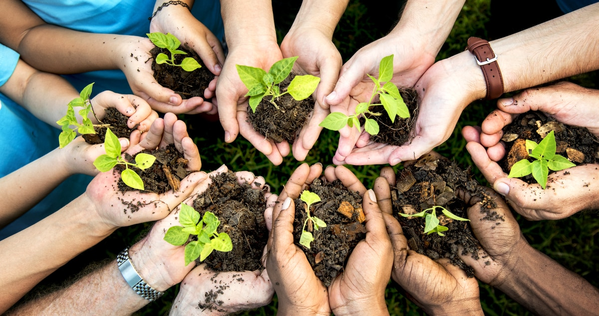
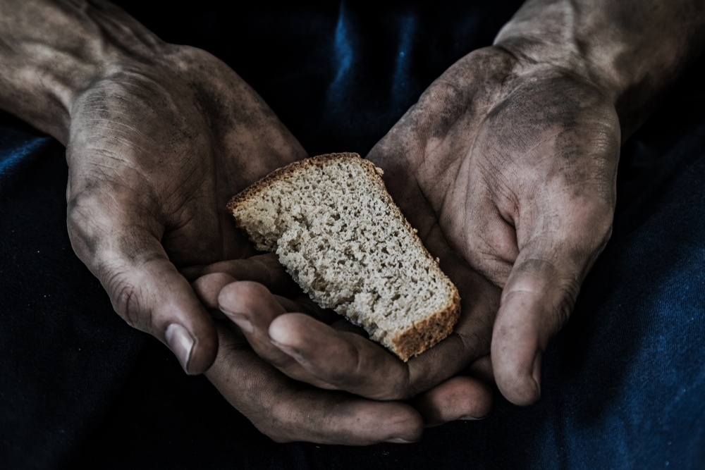

Fome Zero e Agricultura Sustentável

A busca pela erradicação da fome é um dos desafios mais prementes que a humanidade enfrenta no século 21.
Milhões de pessoas em todo o mundo ainda sofrem com a falta de acesso a alimentos adequados, e essa situação
não apenas representa uma tragédia humanitária, mas também ameaça a estabilidade social e a saúde do planeta.
Nesse contexto, a promoção da agricultura sustentável desempenha um papel fundamental na consecução do objetivo de Fome Zero.
A agricultura sustentável se baseia em práticas agrícolas que visam atender às necessidades do presente sem comprometer a capacidade
das gerações futuras de suprir suas próprias necessidades. Ela abrange uma série de estratégias que incluem o uso responsável dos
recursos naturais, a minimização do desperdicio, o fomento da biodiversidade, a redução do uso de produtos químicos nocivos e a promoção
da equidade social no campo. Em contrapartida, o conceito de Fome Zero, promovido pela Organização das Nações Unidas, tem como objetivo
garantir que todas as pessoas tenham acesso a alimentos nutritivos, suficientes e culturalmente adequados.
A fome no mundo
A fome é um problema global que, apesar dos avanços significativos da humanidade em diversas áreas, ainda assombra nosso planeta. Enquanto em algumas partes do mundo a abundância de alimentos é uma realidade, em outras, a falta de acesso a alimentos nutritivos e suficientes continua sendo uma tragédia humanitária. De acordo com a Organização das Nações Unidas para Agricultura e Alimentação (FAO), mais de 9% da população mundial, o equivalente a mais de 690 milhões de pessoas, sofre de desnutrição crônica. Essa estatística, por si só, deveria nos alarmar, uma vez que a fome não deveria ser uma realidade em um mundo onde a produção de alimentos é maior do que nunca.

A fome não é um problema isolado. Ela está intrinsecamente ligada a questões complexas, como pobreza, desigualdade, conflitos,
mudanças climáticas e deslocamentos forçados. Os impactos da fome são devastadores, indo muito além da simples falta de comida.
A desnutrição prejudica o desenvolvimento fisico e cognitivo das crianças, diminuindo suas perspectivas de um futuro saudável e produtivo.
Além disso, enfraquece comunidades, tomando-as mais vulneráveis a doenças e instabilidade social.
A falta de alimentos adequados afeta não apenas a saúde e o bem-estar das pessoas, mas também a estabilidade global.
Conflitos e migrações muitas vezes têm suas raizes na escassez de recursos alimentares, e a fome pode contribuir para a instabilidade
politica e social em niveis nacionais e internacionais.
A erradicação da fome é um desafio complexo, mas é um objetivo que a humanidade deve buscar incansavelmente. Requer ação coletiva,
cooperação internacional e um compromisso inabalável para garantir que nenhuma pessoa no mundo passe fome. A luta contra a fome deve
permanecer no centro das preocupações globais, refletindo nossos valores de compaixão, justiça e igualdade.
A fome no Brasil
O Brasil, uma nação conhecida por sua rica diversidade cultural e recursos naturais abundantes, enfrenta um problema profundamente enraizado
e persistente: a fome. Embora tenha feito avanços notáveis nas últimas décadas, a insegurança alimentar continua sendo uma triste realidade para muitos brasileiros.
A fome no Brasil é multifacetada e complexa, com raízes em desigualdades sociais, econômicas e regionais. A desnutrição afeta especialmente crianças e familias
em situação de vulnerabilidade, e está ligada a problemas de acesso à educação, emprego e serviços de saúde de qualidade. Além disso, a fome não é
um problema isolado; está interligada a questões como pobreza, desigualdade de renda e falta de acesso a saneamento básico.
Houve avanços significativos nas últimas décadas. Programas sociais como o Bolsa Familia e o Programa Nacional de Alimentação Escolar
(PNAE) desempenharam um papel vital na redução da fome no país, garantindo que familias em situação de pobreza tenham acesso a alimentos
e educação. No entanto, desafios persistentes permanecem, especialmente em áreas rurais e comunidades indígenas, onde a insegurança alimentar é mais prevalente.
A pandemia de COVID-19 agravou ainda mais a situação da fome no Brasil, com milhões de pessoas enfrentando dificuldades alimentares devido
à perda de empregos e renda. A crise de saúde pública expôs as desigualdades existentes no país e destacou a necessidade de medidas adicionais
para enfrentar a fome de maneira eficaz.
E como a agricultura sustentável pode nos ajudar a vencer a fome?
A fome é um desafio global que persiste em muitas partes do mundo, ameaçando a saúde e o bem-estar de milhões de pessoas. No entanto, a solução para esse
problema complexo pode ser encontrada em práticas agrícolas inovadoras e sustentáveis.
A agricultura sustentável é uma abordagem que se concentra não apenas na produção de alimentos, mas também na preservação dos recursos naturais,
na redução do impacto ambiental e na promoção de comunidades agrícolas resilientes. Ela se baseia em diversos principios:
1. Uso Responsável dos Recursos: A agricultura sustentável envolve o uso responsável de terra, água e recursos energéticos. Isso evita a degradação do solo, a poluição da água e a depleção de recursos naturais.
2. Diversificação de Culturas: A monocultura intensiva esgota o solo e contribui para a perda de biodiversidade. A agricultura sustentável promove a diversificação de culturas, o que ajuda a manter a saúde do solo e a aumentar a resiliência dos sistemas agricolas.
3. Redução de Residuos e Desperdicio: Minimizar o desperdicio de alimentos é um componente-chave da agricultura sustentável. Isso inclui práticas como a reciclagem de residuos orgánicos e a adoção de tecnologias de colheita que reduzem perdas.
4. Uso Responsável de Insumos Químicos: A redução do uso de pesticidas e fertilizantes químicos não apenas protege a saúde do meio ambiente, mas também a dos agricultores e consumidores. Métodos orgânicos e biológicos podem ser empregados para controlar pragas e doenças.
5. Promoção da Biodiversidade: A biodiversidade é essencial para a saúde dos ecossistemas agricolas. A agricultura sustentável incentiva a preservação de habitats naturais e o uso de práticas que promovem a biodiversidade.
Como a agricultura sustentável pode ajudar a vencer a fome?
1. Aumento da Produção de Alimentos: Práticas sustentáveis podem aumentar a produtividade agrícola ao longo do tempo, garantindo um suprimento constante de alimentos.
2. Resiliência Climática: A agricultura sustentável é mais resiliente às mudanças climáticas, o que é fundamental, considerando o aumento das condições climáticas extremas.
3. Acesso a Alimentos Nutritivos: Promover a diversificação de culturas significa que mais variedades de alimentos nutritivos estão disponíveis, beneficiando a nutrição das comunidades.
4. Redução da Pobreza: O fortalecimento da agricultura sustentável pode criar oportunidades econômicas para pequenos agricultores, reduzindo a pobreza e a insegurança alimentar.
5. Conservação de Recursos: O uso responsável dos recursos naturais garante que as gerações futuras tenham acesso a alimentos e recursos.
Em suma, a agricultura sustentável desempenha um papel crucial na luta contra a fome, Ela não apenas aumenta a produção de alimentos, mas também protege o meio ambiente, promove a diversificação de culturas e melhora a qualidade dos alimentos disponíveis. Investir em práticas agricolas sustentáveis não é apenas benéfico para a agricultura, mas é uma estratégia eficaz para enfrentar a fome globalmente, construindo um futuro mais seguro e saudável para todos.